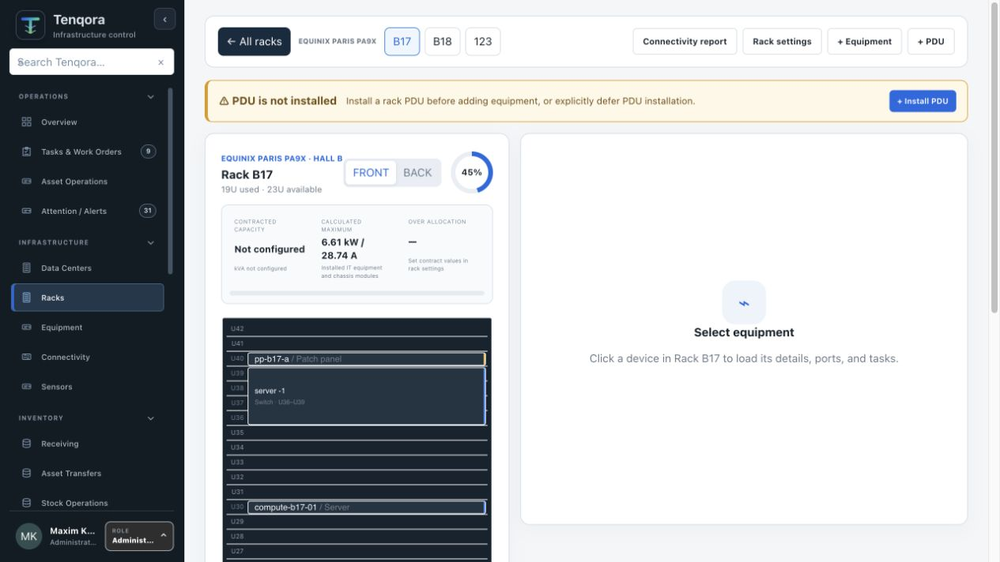
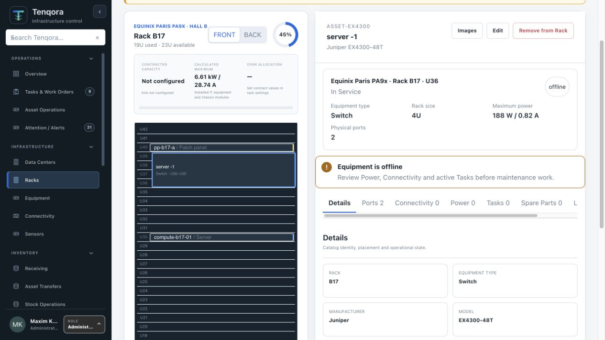

Sites and hierarchy
Model data centers, edge rooms, network sites, rows and racks without forcing every client into one topology.
Plan capacity, place equipment, govern power and preserve the physical context behind every operational decision.

Infrastructure model
Tenqora models the places, capacity and constraints that infrastructure teams act on every day.
Model data centers, edge rooms, network sites, rows and racks without forcing every client into one topology.
Front, rear, zero-U, numbering direction, occupied ranges and equipment placement validation.
Feeds, PDU outlets, PSU inputs, contracted capacity and calculated demand in watts, kW and amperes.
Rack workspace
Rack elevation, power context, device details, Ports, Connectivity, Tasks and Lifecycle remain in one stable workspace.

DCIM with operational evidence